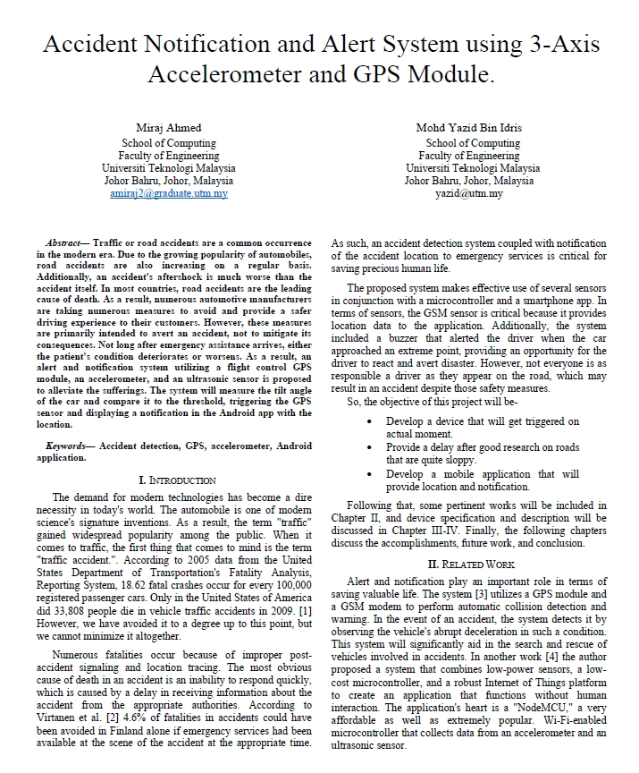
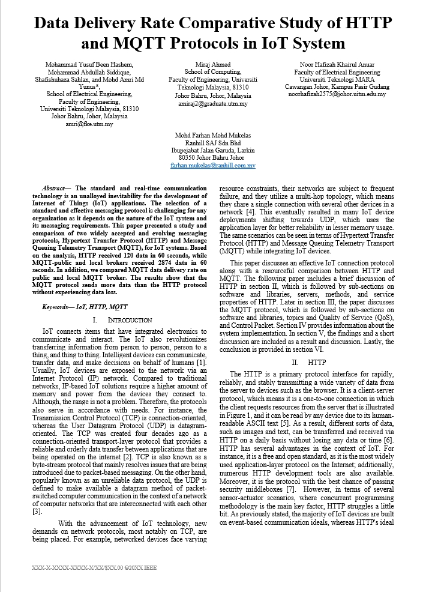

[1] Accident Notification and Alert System using 3-Axis Accelerometer and GPS Module.
Abstract
Traffic or road accidents are a common occurrence in the modern era. Due to the growing popularity of
automobiles, road accidents are also increasing on a regular basis. Additionally, an accident's aftershock is
much worse than the accident itself. In most countries, road accidents are the leading cause of death. As a
result, numerous automotive manufacturers are taking numerous measures to avoid and provide a safer driving
experience to their customers. However, these measures are primarily intended to avert an accident, not to
mitigate its consequences. Not long after emergency assistance arrives, either the patient's condition
deteriorates or worsens. As a result, an alert and notification system utilizing a flight control GPS module,
an accelerometer, and an ultrasonic sensor is proposed to alleviate the sufferings. The system will measure
the tilt angle of the car and compare it to the threshold, triggering the GPS sensor and displaying a
notification in the Android app with the location.
Would join upcoming conference once my supervisor gets free.

[2] Data Delivery Rate, Comparative Study of HTTP and MQTT Protocols in IoT System
Abstract
The standard and real-time communication technology is an unalloyed inevitability for the development of
Internet of Things (IoT) applications. The selection of a standard and effective messaging protocol is
challenging for any organization as it depends on the nature of the IoT system and its messaging requirements.
This paper presented a study and comparison of two widely accepted and evolving messaging protocols, Hypertext
Transfer Protocol (HTTP) and Message Queuing Telemetry Transport (MQTT), for IoT systems. Based on the
analysis, HTTP received 120 data in 60 seconds, while MQTT-public and local brokers received 2874 data in 60
seconds. In addition, we compared MQTT data delivery rate on public and local MQTT broker. The results show
that the MQTT protocol sends more data than the HTTP protocol without experiencing data loss.
Received some change request from IEEE Bahrain, working on resubmission for upcoming conference

[3] Final Year Project Thesis
Abstract
The purpose of this project was to develop a mobile application that would notify users of car accidents via
the internet of things. It sends an alert and notification, complete with location information. The system was
built around a layered design pattern, and the mobile application was written in dart, primarily using the
"flutter" framework. The system's flow is as follows: trigger, then pass, and finally fetch. The device serves
as the trigger and sender, while the mobile application serves as the fetcher. Finally, but certainly not
least, the medium through which this process occurred was "google firebase." Thus, the proposed notification
application apps assist in notifying an accident immediately through simple steps, potentially saving the
lives of numerous people in life-threatening situations.